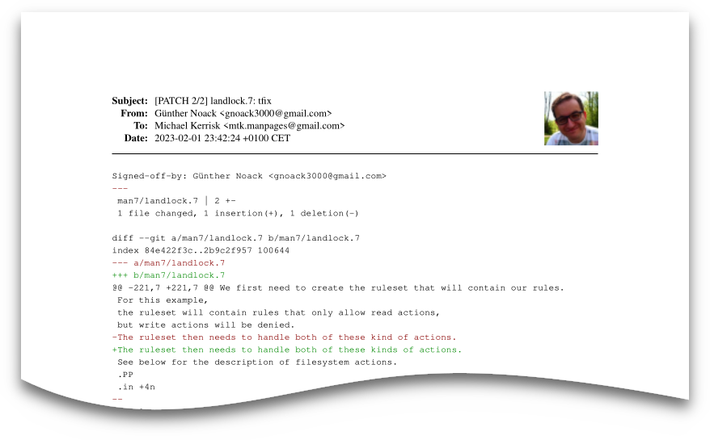

Your eyes hurt from staring at the screen? You prefer to have a stack of paper instead of a computer on your desk? You want to see pictures of your friends and colleagues in your printouts? You want to print your e-mail at scale?
UNIX™ wizards across the globe
rely on Mailprint Deluxe
to print out their electronic mail!
Mailprint is a classic UNIX™ tool and adheres to the UNIX™ pipe-and-filters architecture (email-in, PDF-out).
Mailprint is a drop-in replacement for muttprint.
Mailprint is specifically engineered to be slim. While muttprint depends on the 250MB+ TeX Live distribution, Mailprint is a self-contained binary (below 5MiB).
Mailprint integrates with state-of-the-art profile picture sources to display sender pictures, such as picon.
Mailprint is Free Software and available free of charge at github.com/gnoack/mailprint.
Mailprint is well suited for git patches and electronic mail in text format:
To install the mailprint command line tool to $HOME/go/bin, run:
git clone github.com/gnoack/mailprint cd mailprint go install ./cmd/mailprint
Hook up mailprint with Mutt with the following Mutt configuration entry in .muttrc:
set print_command="mailprint | lpr"
The only runtime dependency is Fontconfig for font lookup, as well as suitable fonts for rendering.